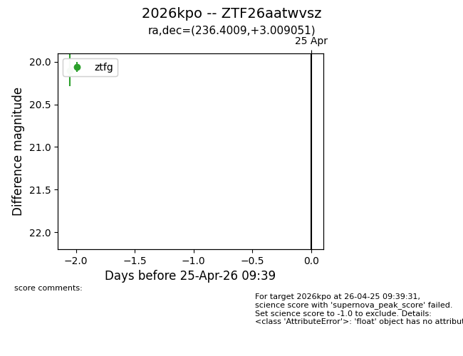
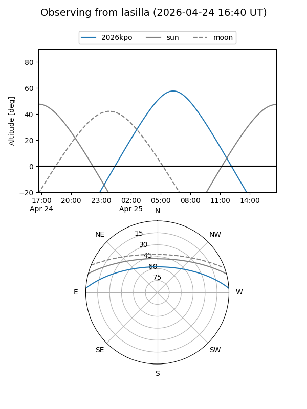
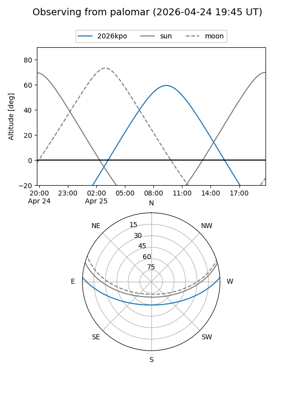
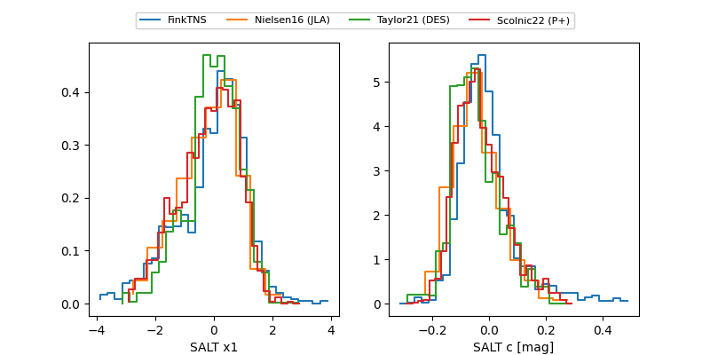

2026kpo
Target 2026kpo at 2026-04-25 09:40
Aliases and brokers:
FINK: link
Lasair: link
ALeRCE: link
TNS: link
YSE: link
alt names
ZTF26aatwvsz (ztf,fink_ztf)
2026kpo (tns,yse)
Coordinates:
equatorial (ra, dec) = 236.4009,+3.00905
equatorial (HMS+DMS) = 15:45:36.21,+03:00:32.58
galactic (l, b) = (10.5452,+41.92663)
Flags:
Photometry:
last ztfg=20.10
1 ztfg detections
Lightcurve

Visibility


Additional plots
